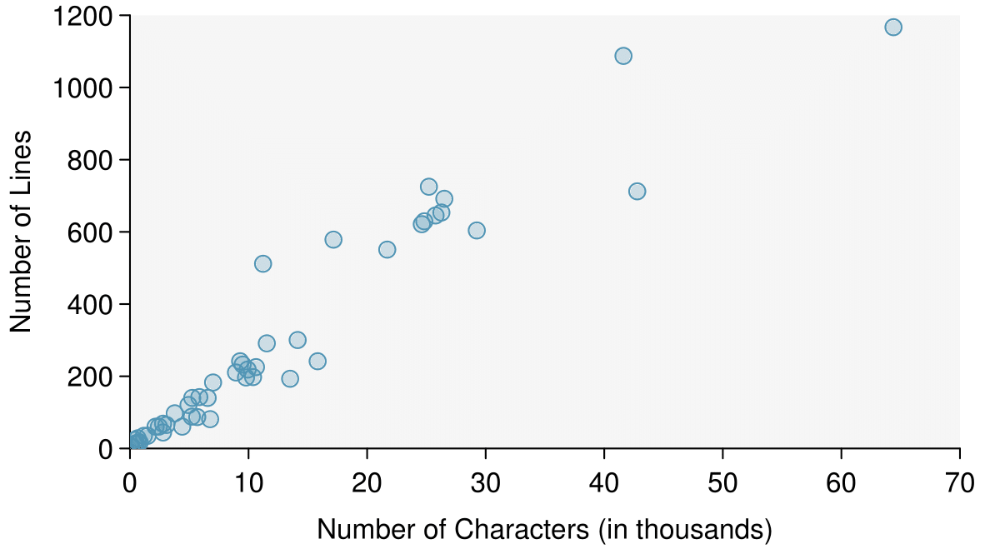
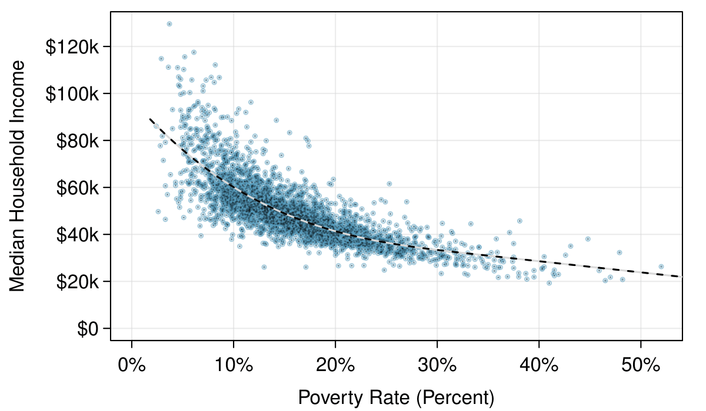
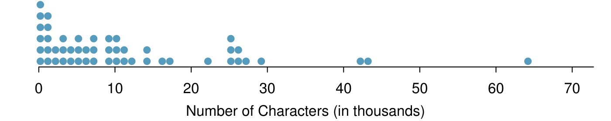
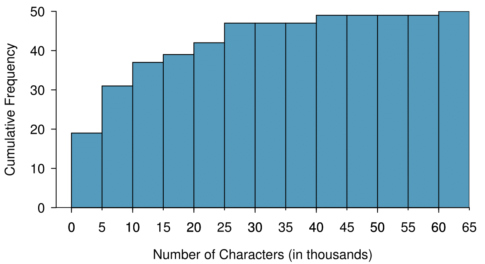
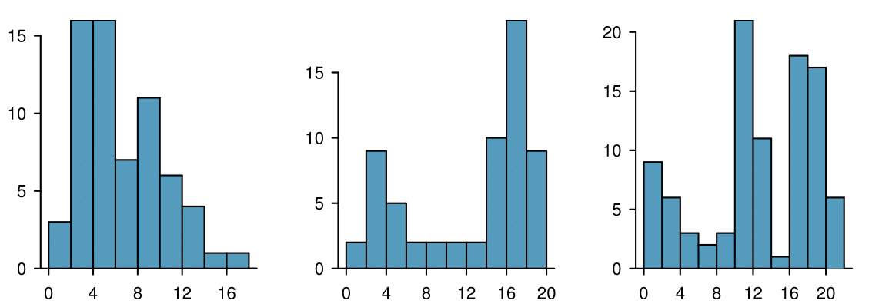
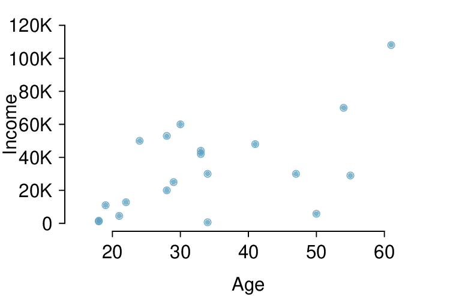
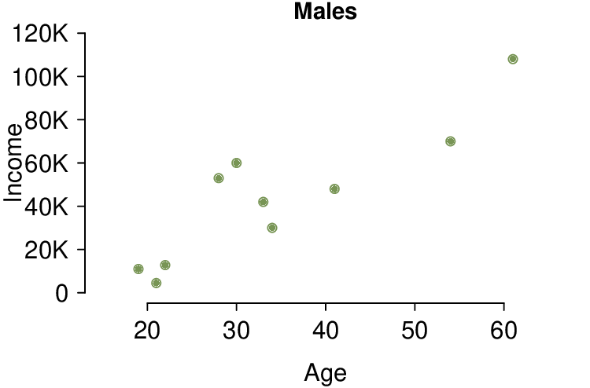
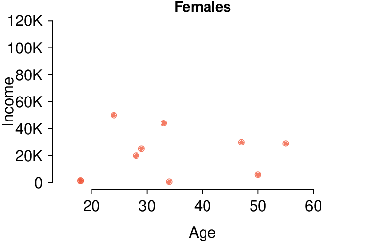
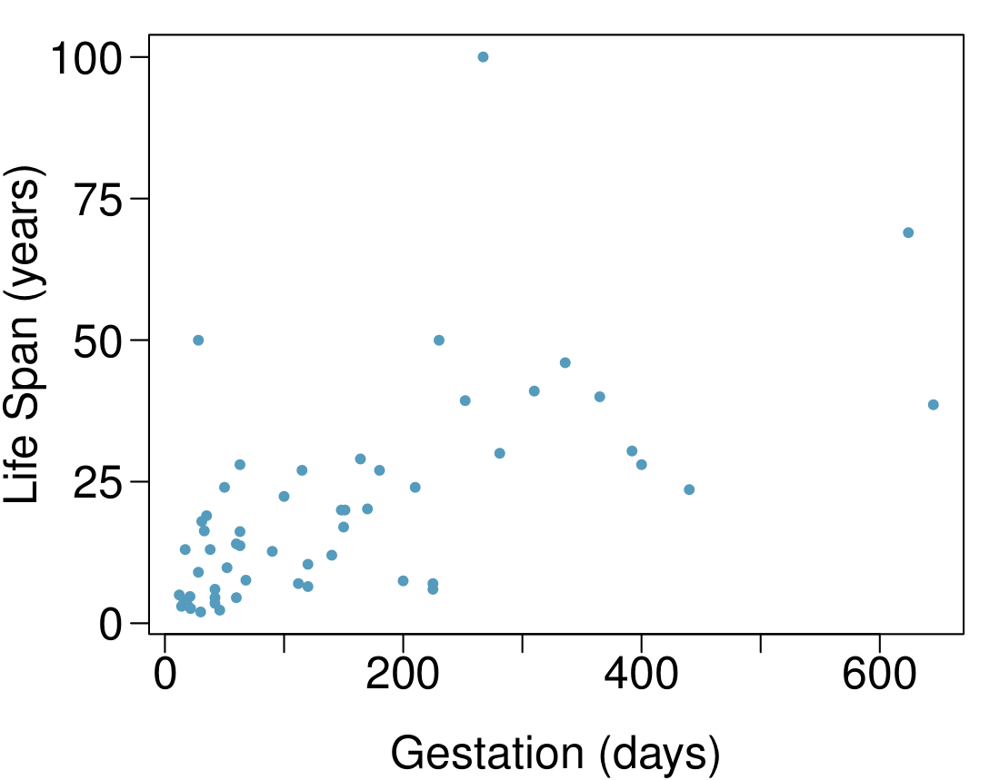

How do we visualize and describe the distribution of household income for counties within the United States? What shape would the distribution have? What other features might be important to notice? In this section, we will explore techniques for summarizing numerical variables. We will apply these techniques using county-level data from the US Census Bureau, which was introduced in Section 1.2, and a new data set email50, that comprises information on a random sample of 50 emails.
Objectives:Learning objectives
Use scatterplots to represent bivariate data and to see the relationship between two numerical variables. Describe the direction, form, and strength of the relationship, as well as any unusual observations.
Understand what the term distribution means and how to summarize it in a table or a graph.
Create univariate displays, including stem-and-leaf plots, dot plots, and histograms, to visualize the distribution of a numerical variable. Be able to read off specific information and summary information from these graphs.
Identify the shape of a distribution as approximately symmetric, right skewed, or left skewed. Also, identify whether a distribution is unimodal, bimodal, multimodal, or uniform.
Read and interpret a cumulative frequency or cumulative relative frequency histogram.
Subsection2.1.1Scatterplots for paired data
Sometimes researchers wish to see the relationship between two variables. When we talk of a relationship or an association between variables, we are interested in how one variable behaves as the other variable increases or decreases.
A scatterplot provides a case-by-case view of data that illustrates the relationship between two numerical variables. A scatterplot is shown in Figure 2.1.1, illustrating the relationship between the number of line breaks (line_breaks) and number of characters (num_char) in emails for the email50 data set. In any scatterplot, each point represents a single case. Since there are 50 cases in email50, there are 50 points in Figure 2.1.1.

Figure2.1.1.A scatterplot of line_breaks versus num_char for the email50 data.
Example2.1.2.
A scatterplot requires bivariate, or paired data. What does paired data mean?
Solution.
We say observations are paired when the two observations correspond to the same case or individual. In unpaired data, there is no such correspondence. In our example the two observations correspond to a particular email.
The variable that is suspected to be the response variable is plotted on the vertical (y) axis and the variable that is suspected to be the explanatory variable is plotted on the horizontal (x) axis. In this example, the variables could be switched since either variable could reasonably serve as the explanatory variable or the response variable.
Drawing scatterplots.
Decide which variable should go on each axis, and draw and label the two axes.
Note the range of each variable, and add tick marks and scales to each axis.
Plot the dots as you would on an \((x,y)\) coordinate plane.
The association between two variables can be positive or negative, or there can be no association. Positive association means that larger values of the first variable are associated with larger values of the second variable. Additionally, the association can follow a linear trend or a curved (nonlinear) trend.
Example2.1.3.
What would it mean for two variables to have a negative association? What about no association?
Solution.
Negative association implies that larger values of the first variable are associated with smaller values of the second variable. No association implies that the values of the second variable tend to be independent of changes in the first variable.
Example2.1.4.
Figure 2.1.5 shows a plot of median household income against the poverty rate for 3,142 counties. What can be said about the relationship between these variables?
Solution.
The relationship is evidently nonlinear, as highlighted by the dashed line. This is different from previous scatterplots we’ve seen, which show relationships that do not show much, if any, curvature in the trend. There is also a negative association, as higher rates of poverty tend to be associated with lower median household income.

Figure2.1.5.A scatterplot of the median household income against the poverty rate for the county data set. A statistical model has also been fit to the data and is shown as a dashed line. Explore dozens of scatterplots using American Community Survey data on Tableau Public 1
What do scatterplots reveal about the data, and how are they useful? 2
Answers may vary. Scatterplots are helpful in quickly spotting associations relating variables, whether those associations come in the form of simple trends or whether those relationships are more complex.
Checkpoint2.1.7.
Describe two variables that would have a horseshoe-shaped association in a scatterplot (\(\cap\) or \(\cup\)). 3
Consider the case where your vertical axis represents something “good” and your horizontal axis represents something that is only good in moderation. Health and water consumption fit this description: we require some water to survive, but consume too much and it becomes toxic and can kill a person. If health was represented on the vertical axis and water consumption on the horizontal axis, then we would create a \(\cap\) shape.
Subsection2.1.2Stem-and-leaf plots and dot plots
Sometimes two variables is one too many: only one variable may be of interest. In these cases we want to focus not on the association between two variables, but on the distribution of a single, or univariate, variable. The term distribution refers to the values that a variable takes and the frequency of these values. Here we introduce a new data set, the email50 data set. This data set contains the number of characters in 50 emails. To simplify the data, we will round the numbers and record the values in thousands. Thus, 22105 is recorded as 22.
Table2.1.8.The number of characters, in thousands, for the data set of 50 emails.
22
0
64
10
6
26
25
11
4
14
7
1
10
2
7
5
7
4
14
3
1
5
43
0
0
3
25
1
9
1
2
9
0
5
3
6
26
11
25
9
42
17
29
12
27
10
0
0
1
16
Rather than look at the data as a list of numbers, which makes the distribution difficult to discern, we will organize it into a table called a stem-and-leaf plot shown in Figure 2.1.9. In a stem-and-leaf plot, each number is broken into two parts. The first part is called the stem and consists of the beginning digit(s). The second part is called the leaf and consists of the final digit(s). The stems are written in a column in ascending order, and the leaves that match up with those stems are written on the corresponding row. Figure 2.1.9 shows a stem-and-leaf plot of the number of characters in 50 emails. The stem represents the ten thousands place and the leaf represents the thousands place. For example, 1 | 2 corresponds to 12 thousand. When making a stem-and-leaf plot, remember to include a legend that describes what the stem and what the leaf represent. Without this, there is no way of knowing if 1 | 2 represents 1.2, 12, 120, 1200, etc.
Figure2.1.9.A stem-and-leaf plot of the number of characters in 50 emails.
Checkpoint2.1.10.
There are a lot of numbers on the first row of the stem-and-leaf plot. Why is this the case? 4
There are a lot of numbers on the first row because there are a lot of values in the data set less than 10 thousand.
When there are too many numbers on one row or there are only a few stems, we split each row into two halves, with the leaves from 0-4 on the first half and the leaves from 5-9 on the second half. The resulting graph is called a split stem-and-leaf plot. Figure 2.1.11 shows the previous stem-and-leaf redone as a split stem-and-leaf.
What is the smallest number in the email50 data set? What is the largest? 5
The smallest number is less than 1 thousand, and the largest is 64 thousand. That is a big range!
Another simple graph for univariate numerical data is a dot plot. A dot plot uses dots to show the frequency, or number of occurrences, of the values in a data set. The higher the stack of dots, the greater the number occurrences there are of the corresponding value. An example using the same data set, number of characters from 50 emails, is shown in Figure 2.1.13.

Figure2.1.13.A dot plot of num_char for the email50 data set.
Checkpoint2.1.14.
Imagine rotating the dot plot 90 degrees clockwise. What do you notice? 6
It has a similar shape as the stem-and-leaf plot! The values on the horizontal axis correspond to the stems and the number of dots in each interval correspond the number of leaves needed for each stem.
These graphs make it easy to observe important features of the data, such as the location of clusters and presence of gaps.
Example2.1.15.
Based on both the stem-and-leaf and dot plot, where are the values clustered and where are the gaps for the email50 data set?
Solution.
There is a large cluster in the 0 to less than 20 thousand range, with a peak around 1 thousand. There are gaps between 30 and 40 thousand and between the two values in the 40 thousands and the largest value of approximately 64 thousand.
Additionally, we can easily identify any observations that appear to be unusually distant from the rest of the data. Unusually distant observations are called outliers. Later in this chapter we will provide numerical rules of thumb for identifying outliers. For now, it is sufficient to identify them by observing gaps in the graph. In this case, it would be reasonable to classify the emails with character counts of 42 thousand, 43 thousand, and 64 thousand as outliers since they are numerically distant from most of the data.
Outliers are extreme.
An outlier is an observation that appears extreme relative to the rest of the data.
Why it is important to look for outliers.
Examination of data for possible outliers serves many useful purposes, including
Identifying asymmetry in the distribution.
Identifying data collection or entry errors. For instance, we re-examined the email purported to have 64 thousand characters to ensure this value was accurate.
Providing insight into interesting properties of the data.
Checkpoint2.1.16.
The observation 64 thousand, a suspected outlier, was found to be an accurate observation. What would such an observation suggest about the nature of character counts in emails? 7
That occasionally there may be very long emails.
Checkpoint2.1.17.
Consider a data set that consists of the following numbers: 12, 12, 12, 12, 12, 13, 13, 14, 14, 15, 19. Which graph would better illustrate the data: a stem-and-leaf plot or a dot plot? Explain. 8
Because all the values begin with 1, there would be only one stem (or two in a split stem-and-leaf). This would not provide a good sense of the distribution. For example, the gap between 15 and 19 would not be visually apparent. A dot plot would be better here.
Subsection2.1.3Histograms
Stem-and-leaf plots and dot plots are ideal for displaying data from small samples because they show the exact values of the observations and how frequently they occur. However, they are impractical for larger samples. For larger samples, rather than showing the frequency of every value, we prefer to think of the value as belonging to a bin. For example, in the email50 data set, we create a table of counts for the number of cases with character counts between 0 and 5,000, then the number of cases between 5,000 and 10,000, and so on. Such a table, shown in Table 2.1.18, is called a frequency table. Bins usually include the observations that fall on their left (lower) boundary and exclude observations that fall on their right (upper) boundary. This is called left inclusive. For example, 5 (i.e. 5000) would be counted in the 5-10 bin, not in the 0-5 bin. These binned counts are plotted as bars in Figure 2.1.19 into what is called a histogram or frequency histogram, which resembles the stacked dot plot shown in Figure 2.1.13.
Table2.1.18.The counts for the binned num_char data.
Characters (in thousands)
0-5
5-10
10-15
15-20
20-25
25-30
\(\cdots\)
55-60
60-65
Count
19
12
6
2
3
5
\(\cdots\)
0
1
Figure2.1.19.A histogram of num_char. This histogram uses bins or class intervals of width 5. Explore this histogram and dozens of histograms using American Community Survey data on Tableau Public 9
What can you see in the dot plot and stem-and-leaf plot that you cannot see in the frequency histogram? 10
Character counts for individual emails.
Drawing histograms.
The variable is always placed on the horizontal axis. Before drawing the histogram, label both axes and draw a scale for each.
Draw bars such that the height of the bar is the frequency of that bin and the width of the bar corresponds to the bin width.
Histograms provide a view of the data density. Higher bars represent where the data are relatively more common. For instance, there are many more emails between 0 and 10,000 characters than emails between 10,000 and 20,000 in the data set. The bars make it easy to see how the density of the data changes relative to the number of characters.
Example2.1.21.
How many emails had fewer than 10 thousand characters?
Solution.
The height of the bars corresponds to frequency. There were 19 cases from 0 to less than 5 thousand and 12 cases from 5 thousand to less than 10 thousand, so there were \(19+12=31\) emails with fewer than 10 thousand characters.
Example2.1.22.
Approximately how many emails had fewer than 1 thousand chacters?
Solution.
Based just on this histogram, we cannot know the exact answer to this question. We only know that 19 emails had between 0 and 5 thousand characters. If the number of emails is evenly distribution on this interval, then we can estimate that approximately \(19/5 \approx 4\) emails fell in the range between 0 and 1 thousand.
Example2.1.23.
What percent of the emails had 10 thousand or more characters?
Solution.
From the first example, we know that 31 emails had fewer than 10 thousand characters. Since there are 50 emails in total, there must be 19 emails that have 10 thousand or more characters. To find the percent, compute \(19/50 = 0.38 = 38\%\text{.}\)
Sometimes questions such as the previous ones can be answered more easily with a cumulative frequency histogram. This type of histogram shows cumulative, or total, frequency achieved by each bin, rather than the frequency in that particular bin.
Table2.1.24.The cumulative frequencies for the binned num_char data.
Characters (in thousands)
0-5
5-10
10-15
15-20
20-25
25-30
30-35
\(\cdots\)
55-60
60-65
Cumulative Frequency
19
31
37
39
42
47
47
\(\cdots\)
49
50

Figure2.1.25.A cumulative frequency histogram of num_char. This histogram uses bins or class intervals of width 5. Compare frequency, relative frequency, cumulative frequency, and cumulative relative frequency histograms on Tableau Public 11
How many of the emails had fewer than 20 thousand characters?
Solution.
By tracing the height of the 15-20 thousand bin over to the vertical axis, we can see that it has a height just under 40 on the cumulative frequency scale. Therefore, we estimate that \(\approx 39\) of the emails had fewer than 30 thousand characters. Note that, unlike with a regular frequency histogram, we do not add up the height of the bars in a cumulative frequency histogram because each bar already represents a cumulative sum.
Example2.1.27.
Using the cumulative frequency histogram, how many of the emails had 10-15 thousand characters?
Solution.
To answer this question, we do a subtraction. \(\approx 39\) had fewer than 15-20 thousand emails and \(\approx 37\) had fewer than 10-15 thousand emails, so \(\approx 2\) must have had between 10-15 thousand emails.
Example2.1.28.
Approximately 25 of the emails had fewer than how many characters?
Solution.
This time we are given a cumulative frequency, so we start at 25 on the vertical axis and trace it across to see which bin it hits. It hits the 5-10 thousand bin, so 25 of the emails had fewer than a value somewhere between 5 and 10 thousand characters.
Knowing that 25 of the emails had fewer than a value between 5 and 10 thousand characters is useful information, but it is even more useful if we know what percent of the total 25 represents. Knowing that there were 50 total emails tells us that \(25 / 50 = 0.5 = 50\%\) of the emails had fewer than a value between 5 and 10 thousand characters. When we want to know what fraction or percent of the data meet a certain criteria, we use relative frequency instead of frequency. Relative frequency is a fancy term for percent or proportion. It tells us how large a number is relative to the total.
Just as we constructed a frequency table, frequency histogram, and cumulative frequency histogram, we can construct a relative frequency table, relative frequency histogram, and cumulative relative frequency histogram.
Checkpoint2.1.29.
How will the shape of the relative frequency histograms differ from the frequency histograms? 12
The shape will remain exactly the same. Changing from frequency to relative frequency involves dividing all the frequencies by the same number, so only the vertical scale (the numbers on the y-axis) change.
Pay close attention to the vertical axis of a histogram.
We can misinterpret a histogram if we forget to check whether the vertical axis represents frequency, relative frequency, cumulative frequency, or cumulative relative frequency.
Subsection2.1.4Describing Shape
Frequency and relative frequency histograms are especially convenient for describing the shape of the data distribution . Figure 2.1.19 shows that most emails have a relatively small number of characters, while fewer emails have a very large number of characters. When data trail off to the right in this way and have a longer right tail , the shape is said to be right skewed. 13
Other ways to describe data that are right skewed: skewed to the right, skewed to the high end, or skewed to the positive end.
Data sets with the reverse characteristic — a long, thin tail to the left — are said to be left skewed. We also say that such a distribution has a long left tail. Data sets that show roughly equal trailing off in both directions are called symmetric.
Long tails to identify skew.
When data trail off in one direction, the distribution has a long tail. If a distribution has a long left tail, it is left skewed. If a distribution has a long right tail, it is right skewed.
Checkpoint2.1.30.
Take a look at the dot plot in Figure 2.1.13. Can you see the skew in the data? Is it easier to see the skew in the frequency histogram, the dot plot, or the stem-and-leaf plot? 14
The skew is visible in all three plots. However, it is not easily visible in the cumulative frequency histogram.
Checkpoint2.1.31.
Would you expect the distribution of number of pets per household to be right skewed, left skewed, or approximately symmetric? Explain. 15
We suspect most households would have 0, 1, or 2 pets but that a smaller number of households will have 3, 4, 5, or more pets, so there will be greater density over the small numbers, suggesting the distribution will have a long right tail and be right skewed.
In addition to looking at whether a distribution is skewed or symmetric, histograms, stem-and-leaf plots, and dot plots can be used to identify modes. A mode is represented by a prominent peak in the distribution. 16
Another definition of mode, which is not typically used in statistics, is the value with the most occurrences. It is common to have no observations with the same value in a data set, which makes this other definition useless for many real data sets.
There is only one prominent peak in the histogram of num_char.
Figure 2.1.32 shows histograms that have one, two, or three prominent peaks. Such distributions are called unimodal, bimodal, and multimodal, respectively. Any distribution with more than 2 prominent peaks is called multimodal. Notice that in Figure 2.1.19 there was one prominent peak in the unimodal distribution with a second less prominent peak that was not counted since it only differs from its neighboring bins by a few observations.

Figure2.1.32.Counting only prominent peaks, the distributions are (left to right) unimodal, bimodal, and multimodal.
Checkpoint2.1.33.
Height measurements of young students and adult teachers at a K-3 elementary school were taken. How many modes would you anticipate in this height data set? 17
There might be two height groups visible in the data set: one of the students and one of the adults. That is, the data are probably bimodal.
Looking for modes.
Looking for modes isn’t about finding a clear and correct answer about the number of modes in a distribution, which is why prominent is not rigorously defined in this book. The important part of this examination is to better understand your data and how it might be structured.
Subsection2.1.5Descriptive versus inferential statistics
Finally, we note that the graphical summaries of this section and the numerical summaries of the next section fall into the realm of descriptive statistics. Descriptive statistics is about describing or summarizing data; it does not attribute properties of the data to a larger population. Inferential statistics, on the other hand, uses samples to generalize or to infer something about a larger population. We will have to wait until [cross-reference to target(s) "foundationsForInference" missing or not unique] to enter the exciting world of inferential statistics.
Subsection2.1.6Section summary
A scatterplot is a bivariate display illustrating the relationship between two numerical variables. The observations must be paired, which is to say that they correspond to the same case or individual. The linear association between two variables can be positive or negative, or there can be no association. Positive association means that larger values of the first variable are associated with larger values of the second variable. Negative association means that larger values of the first variable are associated with smaller values of the second variable. Additionally, the association can follow a linear trend or a curved (nonlinear) trend.
When looking at a univariate display, researchers want to understand the distribution of the variable. The term distribution refers to the values that a variable takes and the frequency of those values. When looking at a distribution, note the presence of clusters, gaps, and outliers.
Distributions may be symmetric or they may have a long tail. If a distribution has a long left tail (with greater density over the higher numbers), it is left skewed. If a distribution has a long right tail (with greater density over the smaller numbers), it is right skewed.
Distributions may be unimodal, bimodal, or multimodal.
Two graphs that are useful for showing the distribution of a small number of observations are the stem-and-leaf plot and dot plot. These graphs are ideal for displaying data from small samples because they show the exact values of the observations and how frequently they occur. However, they are impractical for larger data sets.
For larger data sets it is common to use a frequency histogram or a relative frequency histogram to display the distribution of a variable. This requires choosing bins of an appropriate width.
To see cumulative amounts, use a cumulative frequency histogram. A cumulative relative frequency histogram is ideal for showing percentiles.
Descriptive statistics describes or summarizes data, while inferential statistics uses samples to generalize or infer something about a larger population.
Exercises2.1.7Exercises
1.ACS, Part I.
Each year, the US Census Bureau surveys about 3.5 million households with The American Community Survey (ACS). Data collected from the ACS have been crucial in government and policy decisions, helping to determine the allocation of federal and state funds each year. Some of the questions asked on the survey are about their income, age (in years), and gender. The table below contains this information for a random sample of 20 respondents to the 2012 ACS. 18
United States Census Bureau. Summary File.2012 American Community Survey.U.S. Census Bureau’s American Community Survey Office, 2013. Web.
Income
Age
Gender
1
53,000
28
male
2
1600
18
female
3
70,000
54
male
4
12,800
22
male
5
1,200
18
female
6
30,000
34
male
7
4,500
21
male
8
20,000
28
female
9
25,000
29
female
10
42,000
33
male
Income
Age
Gender
11
670
34
female
12
29,000
55
female
13
44,000
33
female
14
48,000
41
male
15
30,000
47
female
16
60,000
30
male
17
108,000
61
male
18
5,800
50
female
19
50,000
24
female
20
11,000
19
male
Create a scatterplot of income vs. age, and describe the relationship between these two variables.
Now create two scatterplots: one for income vs. age for males and another for females.
How, if at all, do the relationships between income and age differ for males and females?
Solution.
There is a weak and positive relationship between age and income. With so few points it is difficult to tell the form of the relationship (linear or not) however the relationship does look somewhat curved.



For males as age increases so does income, however this pattern is not apparent for females.
2.MLB stats.
A baseball team’s success in a season is usually measured by their number of wins. In order to win, the team has to have scored more points (runs) than their opponent in any given game. As such, number of runs is often a good proxy for the success of the team. The table below shows number of runs, home runs, and batting averages for a random sample of 10 teams in the 2014 Major League Baseball season. 19
Are home runs or batting averages more strongly associated with number of runs? Explain your reasoning.
3.Fiber in your cereal.
The Cereal FACTS report provides information on nutrition content of cereals as well as who they are targeted for (adults, children, families). We have selected a random sample of 20 cereals from the data provided in this report. Shown below are the fiber contents (percentage of fiber per gram of cereal) for these cereals. 20
40% (Note: if using only rel. freq. histogram, you can only get an estimate because 7 is in the middle of the bin. Use the dot plot to get a more accurate answer.)
4.Sugar in your cereal.
The Cereal FACTS report from Exercise 2.1.7.3 also provides information on sugar content of cereals. We have selected a random sample of 20 cereals from the data provided in this report. Shown below are the sugar contents (percentage of sugar per gram of cereal) for these cereals.
Brand
Sugar %
1
Rice Krispies Gluten Free
3%
2
Rice Krispies
12%
3
Dora the Explorer
22%
4
Frosted Flakes Red. Sugar
27%
5
Clifford Crunch
27%
6
Rice Krispies Treats
30%
7
Pebbles Boulders Choc. PB
30%
8
Cinnamon Toast Crunch
30%
9
Trix
31%
10
Honey Comb
31%
Brand
Sugar %
11
Corn Pops
31%
12
Cheerios Honey Nut
32%
13
Reese’s Puffs
34%
14
Pebbles Fruity
37%
15
Pebbles Cocoa
37%
16
Lucky Charms
37%
17
Frosted Flakes
37%
18
Pebbles Marshmallow
37%
19
Frosted Rice Krispies
40%
20
Apple Jacks
43%
Create a stem and leaf plot of the distribution of the sugar content of these cereals.
Create a dot plot of the sugar content of these cereals.
Create a histogram and a relative frequency histogram of the sugar content of these cereals.
What percent of cereals contain more than 30% sugar?
5.Mammal life spans.
Data were collected on life spans (in years) and gestation lengths (in days) for 62 mammals. A scatterplot of life span versus length of gestation is shown below. 21
What type of an association is apparent between life span and length of gestation?
What type of an association would you expect to see if the axes of the plot were reversed, i.e. if we plotted length of gestation versus life span?
Are life span and length of gestation independent? Explain your reasoning.

Solution.
Positive association: mammals with longer gestation periods tend to live longer as well.
Association would still be positive.
No, they are not independent. See part (a).
6.Associations.
Indicate which of the plots show (a) a positive association, (b) a negative association, or (c) no association. Also determine if the positive and negative associations are linear or nonlinear. Each part may refer to more than one plot.